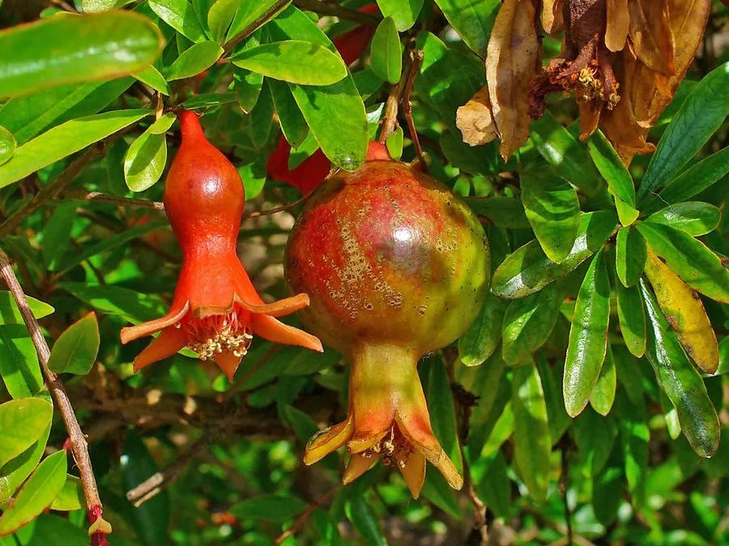

灌木与花木 · 植物界
石榴 Punica granatum

千屈菜科落叶灌木或小乔木，夏季开橙红色花，秋季结多籽浆果，花果兼赏，是栽培历史悠久的吉祥树种。
- 分类
- 门被子植物门纲木兰纲目桃金娘目科千屈菜科属石榴属
- 栖息环境
- 温暖干燥的山坡、庭院与田园，喜光耐旱
- 地理分布
- 原产巴尔干半岛至伊朗；中国黄河流域及以南广泛栽培
- 保护级别
- 暂无评估；中国未列入国家重点保护野生植物名录
物种志
石榴为千屈菜科石榴属落叶灌木或小乔木，高 2–5 米，幼枝常呈四棱形，枝端具刺。叶对生或簇生，长圆状披针形，全缘。花单生或数朵生于枝顶，花萼钟状、红色，花瓣 5–7 枚，橙红色，花期 5–7 月；果实为浆果，球形，成熟时黄红色，内含多数晶莹的种子，果期 9–10 月。
石榴原产巴尔干半岛至伊朗一带，汉代张骞出使西域后传入中国，已有两千多年栽培历史。它喜光、耐旱、耐瘠薄，适宜温暖干燥和排水良好的环境。石榴花红似火，果实多籽，在中国传统文化中寓意多子多福、繁荣昌盛；果可鲜食、榨汁、酿酒，果皮与根皮入药，有涩肠止泻、驱虫之效。
形态与习性
- 株高2–5 米，幼枝四棱形
- 花期5–7 月，花橙红色
- 果期9–10 月，浆果多籽
- 光照喜光，光照充足开花多
- 水分耐旱，忌积水
- 土壤疏松肥沃、排水良好的壤土
- 主要用途观花观果，果可食，果皮入药
趣味知识
- 石榴籽多，在中国传统文化中象征多子多福。
- 石榴花多为橙红色，也有白花、黄花等品种。
- 汉代张骞出使西域后，石榴传入中国，栽培历史超过两千年。
- 石榴果皮入药称“石榴皮”，有涩肠止泻之效。